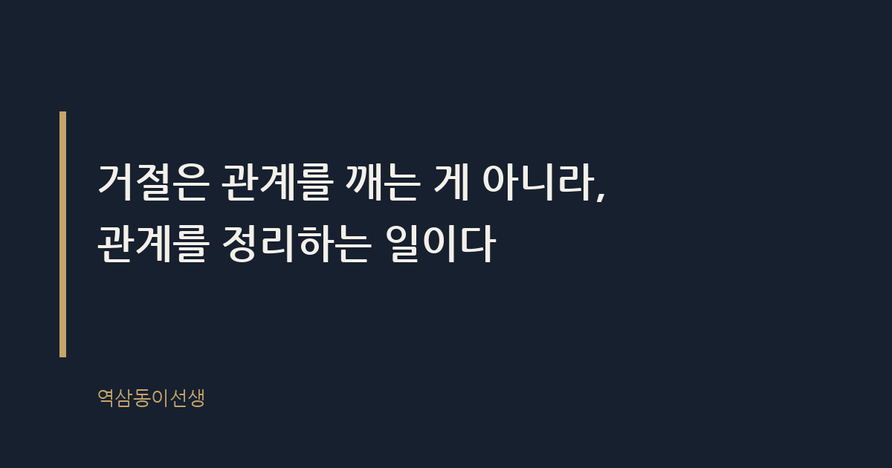
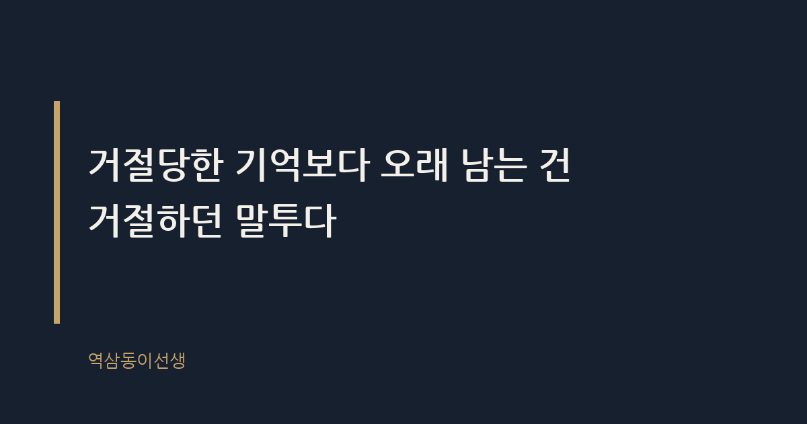

주제 부탁을 거절해도 관계가 망가지지 않는 말투 (evergreen / office)
제목 후보
메타 설명 부탁을 거절해도 관계가 멀어지지 않는 말투가 따로 있다. 회의실에서 본 두 팀장의 거절법 차이로 알아보는 실전 화법.
라벨 거절화법, 직장생활, 인간관계, 오피스라이프, 직장인공감, 일잘러, 부탁거절말투, 거절잘하는법, 직장동료관계, 거절해도관계유지, 회사생활팁
실용 자산 예시 문장 모음 — 거절 화법은 바로 써먹을 수 있는 도구형 검색 의도라 상황별 예시 문장이 양식보다 효과적이다
발행 전 팩트체크
이미지 (Blogger 편집기에 드래그해 넣으세요)
도입부 사진 · ⓒ Mr-Bozen / Pexels


지난달 팀 회의가 끝나고 후배 하나가 따라 나와 물었다. 급하게 잡힌 외주 미팅에 같이 들어가 줄 수 있냐고. 나는 안 된다고 했다. 그날 오후에 이미 다른 보고가 잡혀 있었고, 겹치면 둘 다 망칠 게 뻔했다. 그런데 신기하게도 그 후배는 다음 날 점심을 먼저 먹자고 했다. 반대로 옆 팀 팀장은 비슷한 부탁을 거절했다가 그 팀원과 석 달째 눈도 안 마주친다고 들었다. 같은 거절인데 왜 한쪽은 관계가 유지되고 한쪽은 틀어졌을까.
답은 거절의 내용이 아니라 거절할 때 쓰는 말투에 있다. 거절해도 관계가 망가지지 않는 사람들은 거절의 이유를 설명하는 순서와 태도가 다르다. 반대로 관계가 깨지는 거절은 대부분 '안 된다'는 말만 던지고 그 뒤를 비워 둔다. 비어 있는 자리에 상대는 자기 나름의 서운함을 채워 넣는다.
거절을 잘하는 사람을 옆에서 오래 지켜보면 공통점이 하나 보인다. 이들은 거절을 '마지막 말'이 아니라 '대화의 한 지점'으로 다룬다. "안 돼요"로 끝내는 게 아니라 "지금은 안 되는데, 이런 이유 때문"이라는 설명이 따라붙는다. 설명이 길 필요는 없다. 서너 문장이면 충분하다. 중요한 건 상대가 거절의 이유를 추측하지 않게 만드는 것이다.
반대로 거절을 못하는 사람은 두 부류로 나뉜다. 하나는 거절 자체를 못 해서 무리하게 떠안는 사람, 다른 하나는 거절은 하는데 말투가 날카로워서 관계를 베는 사람이다. 흥미로운 건 두 번째 부류가 자기 거절이 왜 문제인지 끝까지 모른다는 점이다. "나는 솔직하게 말한 것뿐"이라고 믿는다. 솔직함과 배려 없음은 다른 건데, 그 둘을 자주 헷갈린다.
로마 원로원 기록을 보면 거절의 수사학이 따로 있었다고 전해진다. 거절할 때도 상대의 체면을 지켜 주는 표현을 쓰는 게 정치적 기술이었다는 것이다. 회사도 다르지 않다. 거절은 내용의 문제가 아니라 체면을 지켜 주느냐의 문제다.
실제로 거절을 잘하는 후배 하나를 몇 년째 지켜본 적이 있다. 그 친구는 거절할 때 꼭 상대의 눈을 보고 말했다. 메신저로 거절해야 할 상황에서도 먼저 "통화 괜찮으세요?"라고 물었다. 글자로만 남는 거절은 상대가 몇 번이고 다시 읽으며 의미를 곱씹게 만든다는 걸 알고 있었던 것 같다. 말로 전하는 거절은 그 순간 끝나지만, 텍스트로 남는 거절은 계속 재생된다.
거절의 내용과 말투 못지않게 중요한 게 타이밍이다. 부탁을 받고 하루이틀 끌다가 거절하는 것과, 받자마자 그 자리에서 거절하는 것은 상대가 느끼는 무게가 완전히 다르다. 시간을 끈 거절은 상대에게 '혹시 되려나'라는 기대를 심어 놓고 그 기대를 나중에 깨는 셈이다. 기대가 클수록 거절의 타격도 커진다.
반대로 즉시 거절하면 상대는 아쉽긴 해도 바로 다음 방법을 찾아 움직일 수 있다. 어느 선배는 부탁을 받으면 가능 여부를 그 자리에서 판단해 말해 주는 사람으로 유명했다. "고민해 볼게요"라는 말을 거의 쓰지 않았다. 처음엔 냉정해 보였는데, 시간이 지나니 그 즉답이 오히려 신뢰를 쌓았다. 사람들은 결과보다 빠른 답을 더 고마워할 때가 많다.
거절을 피하고 억지로 승낙하는 사람은 당장은 좋은 사람처럼 보인다. 그런데 이게 관계를 더 망가뜨리는 이유는, 억지 승낙 뒤에는 반드시 티가 나는 소홀함이 따라오기 때문이다. 마지못해 맡은 일은 완성도가 떨어지고, 완성도가 떨어지면 상대는 결과물로 또 한 번 실망한다. 거절 한 번으로 끝날 일이 실망 두 번으로 늘어나는 셈이다.
인사 시즌에 퇴사 면담을 하다 보면 이 패턴이 자주 보인다. "저 사람이 늘 부탁을 다 들어줘서 좋았는데, 어느 순간부터 대충 하는 게 느껴졌다"는 말을 꽤 들었다. 거절 못 하는 사람 주변에는 결국 신뢰가 얕아진 관계만 남는다. 거절이란 '지금 이 부탁은 내가 들어줄 수 없다'는 의사표시이고, 이를 제때 하지 않으면 나중에는 훨씬 큰 신뢰의 문제로 돌아온다.
거절 말투는 상대가 상사인지 동료인지 후배인지에 따라 결을 달리해야 한다. 같은 구조라도 어디에 힘을 싣느냐가 다르다. 후배에게는 대안 제시에, 동료에게는 이유 설명에, 상사에게는 대안과 함께 책임지겠다는 태도에 힘을 실어야 한다.
거절 문장은 구조가 정해져 있다. 상대의 요청을 인정하는 한 마디, 거절의 이유, 대안이나 다음 기회 제안. 이 세 가지가 순서대로 들어가면 거절해도 관계는 거의 깨지지 않는다. 아래는 회사에서 실제로 자주 마주치는 상황별 예시다.
위 예시를 뜯어보면 패턴이 보인다. 인정 한 마디로 상대의 체면을 지키고, 이유를 짧게 설명하고, 대안을 하나 얹는다. 이 세 박자가 거절이 공격으로 들리지 않게 만드는 장치다. 거절해도 관계가 망가지지 않는 말투란, 거절의 내용은 단호하게 유지하되 전달 방식에서 상대를 밀어내지 않는 화법을 말한다.
거절 후 관계가 유지되는 사람들을 더 지켜보면 한 가지가 더 보인다. 이들은 거절한 다음 그 주제를 다시 꺼낸다. "지난번 그 건, 결국 어떻게 처리됐어요?"라고 묻는 식이다. 거절로 끝낸 게 아니라 거절 이후에도 관심을 이어간다는 신호를 준다. 이게 관계 유지에 의외로 큰 역할을 한다. 거절당한 사람이 가장 서운해하는 지점은 거절 자체가 아니라, 거절한 뒤 그 사람이 나를 신경 쓰지 않는 것 같은 느낌이기 때문이다.
반대로 거절하고 바로 그 사람을 투명 인간 취급하면, 거절의 내용이 아무리 정당해도 관계는 식는다. 거절은 한 번의 사건이지만 그 이후의 태도는 지속적인 신호다. 사람들은 사건보다 신호를 더 오래 기억한다. 그 후배도 마찬가지였다. 거절당한 다음 날 먼저 점심을 먹자고 한 건, 어쩌면 내가 그 자리에서 왜 안 되는지를 분명히 설명했기 때문일 수도 있고, 거절 뒤에도 그 미팅이 어떻게 끝났는지 따로 물어봤기 때문일 수도 있다.
거절 자리에서 자주 나오는 실수형 문장 세 가지가 있다. 하나는 "제가 그걸 왜 해야 하죠"처럼 질문 형태로 상대를 몰아붙이는 것, 둘은 "저번에도 말씀드렸잖아요"처럼 과거를 끌어와 상대를 탓하는 것, 셋은 침묵이나 메신저 읽씹으로 거절 의사를 대신하는 것이다. 특히 세 번째가 관계를 가장 조용히, 가장 확실하게 망가뜨린다. 거절은 말로 하지 않으면 상대가 가장 나쁜 쪽으로 해석하게 되어 있다.
거절은 관계를 깨는 게 아니라, 관계를 정리하는 일이다. 거절하지 않고 떠안은 부탁은 언젠가 소홀함으로 티가 나고, 그 소홀함이 관계를 더 깊게 상처 낸다. 제대로 된 거절은 오히려 상대에게 '이 사람은 할 수 있는 것과 없는 것을 분명히 말해 주는 사람'이라는 신뢰를 남긴다. 씁쓸하지만, 결국 관계를 지키는 건 승낙이 아니라 거절하는 태도였다.
거절당한 기억보다 오래 남는 건 거절하던 말투다. 그 말투 하나로 같은 사람이 '선 긋는 사람'도 되고 '믿을 수 있는 사람'도 된다.
Q. 거절당했을 때 서운했던 건 거절의 내용이었나요, 아니면 그 말투였나요?